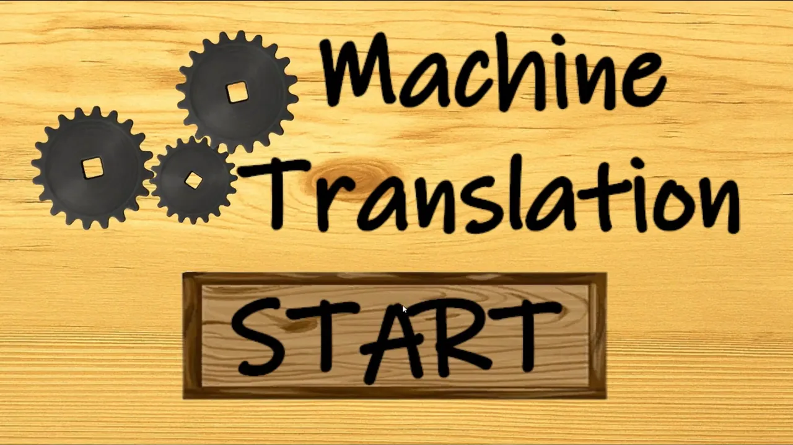

GAME WORKS ／ 長屋晴太の作品
Machine Translation
2Dパズルゲーム
🏆 初めてゲームジャムに参加・チームの「Machine Translation」がクリエイティブ賞を受賞
歯車を回して、正しい文章を完成させよう！ 歯車にバラバラに付いた英単語を、歯車を回して並べ、文章を完成させるパズルゲーム。
TECH POINT（技術のポイント）
プレイシーンの基盤になる、単語が付いた歯車が回るシステムを担当。初めて作るタイプのゲームで、歯車の回転に合わせて単語を正しく動かす仕組みを考えるのに時間をかけた。アメリカの大学生を含む7人のチームで、3日間で制作した。
- DATE（制作時期）
- 2025/06
- TEAM（人数）
- 7人チーム
- ROLE（担当）
- 単語が付いた歯車が回るシステム（プレイシーンの基盤）・発表資料
- TOOLS（使った技術）
- Unity ／ C#